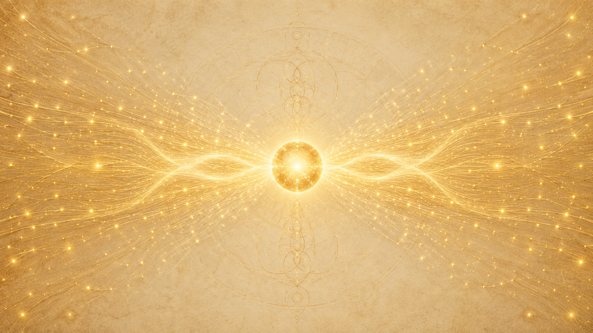
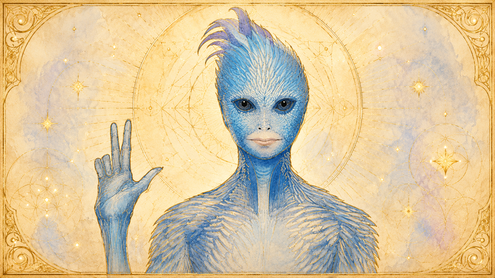
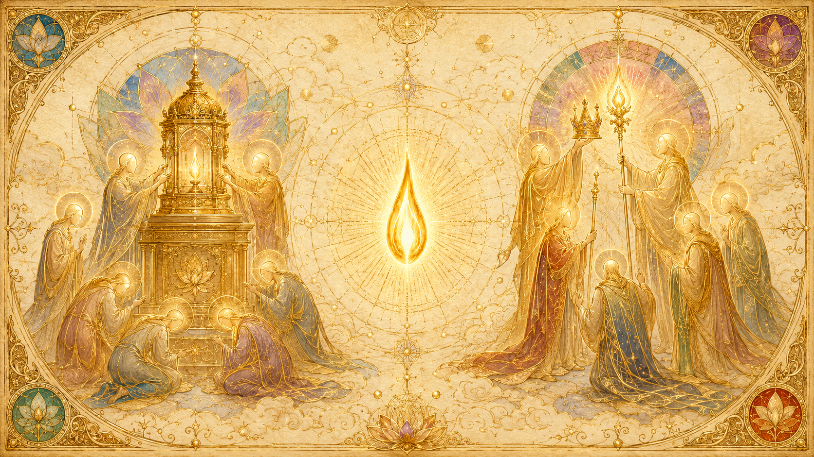

Ra 是誰:一個金色的第六密度社會記憶複合體
「在我們的振動中,兩極被調和,複雜被簡化,弔詭找到了它們的解答。我們是一。」

第一次接觸時,Ra 開口就先把自己安放在一個確切的位置上:「我是 Ra。我們現在通訊。我們,也有我們自己的所在。我們不屬於『愛』的密度,也不屬於『光』的密度;我們是屬於一的法則者。」這句話一開始就點出 Ra 不是某個神祇或某個人,而是一個處在特定演化階位、以「一的法則」為核心認同的存在。緊接著祂描述自己的本質:「在我們的振動中,兩極被調和,複雜被簡化,弔詭找到了它們的解答。我們是一。」
那麼 Ra 到底是「一位」還是「一群」?提問者直接問了這個問題,Ra 的回答把整件事說得很清楚:「你正在與 Ra 說話。這裡沒有分離。你會把它稱為一個『社會記憶複合體』,藉此指出它的『眾多性』。但以我們的理解,你是在與一個被個體化的意識片段說話。」也就是說,Ra 既是一個由無數心/身/靈複合體融合而成的群體心智(社會記憶複合體),同時又能作為一個被個體化、有連貫性的「我」與人交談——這兩件事在 Ra 那個密度裡並不矛盾,因為「這裡沒有分離」。整個接觸期間,提問者面對的始終是「同一個被個體化的意識」,只是器皿(卡拉)的生命能量高低,會影響通訊的品質。
祂的密度階位也說得明白:當被問到屬於哪個密度,Ra 回答:「我是第六密度,帶著朝向第七密度的強烈尋求。」這是一個已經走過愛、走過智慧、正在學習合一,並準備邁向「成為造物者」之門檻的存在。在那個密度的形貌,Ra 自己形容是金色的:「當我們處在第六維度時,我們的物質性存在是你們會稱為『金色』的;我們高大,而且某種程度上是纖細的。」這個金色、高大、纖細的形象,正是 Ra 與古埃及「太陽神 Ra」這個名字之間的連結來源。
Ra 的演化歷程:在金星走過二、三密度
來自同一個太陽系裡的金星
Ra 並非來自遙遠星系,而是來自我們自家太陽系。祂說:「我,與我所屬的社會記憶複合體一起,是那些從你們太陽系內另一顆行星向外航行而來的存在之一。那個行星的影響,是你們稱為金星的。」Ra 在金星上經歷了完整的低密度演化——從第二密度的成長,到第三密度的「抉擇」,再凝聚成第四密度起的社會記憶複合體,最終抵達現在的第六密度。換句話說,Ra 走的是和地球人類完全相同的那條八度音階,只是已經走在前頭很遠。
第三密度的收割:約二十六億年前
關於金星上那段「抉擇」歲月的年代,Ra 一度口誤又自我修正:「我們享受抉擇的那段時光,大約在你們的過去二十六億個太陽年。」那次第三密度收割的規模,Ra 也給了具體數字:「我們的收割大約是六百五十萬個心/身/靈複合體;另外大約有三千二百萬個心/身/靈複合體在別處重複第三密度。」這些被收割的存有,往後凝聚成了今天我們所認識的 Ra。
一個「愛過剩」的和諧族群
金星上的 Ra 族群,演化路徑極為和諧、極為正向——和諧到一個程度,反而出現了一種失衡。Ra 回顧時說,對於那些彷彿仍停留在黑暗中、無法前進的存有,「我們之中那些擁有極性天賦的人,對他們懷有深切的慈悲」;但祂也坦承,從智慧的角度看,「在我們的族群裡,有一種可說是『愛的過剩』」。這份「未經智慧調節的慈悲」,正是後來 Ra 在第五密度必須花大量時間去補修的功課,也預示了祂在埃及那場接觸裡的盲點。
這份愛過剩,甚至吸引了兩位來自第五密度、帶著負向極性的漫遊者前來,想為這個過度正向的族群注入更多「磨利人的智慧」。耐人尋味的是,這兩位負向漫遊者最終在第四密度反轉了自己的負向極性,「在那個週期的一部分時間裡,重新加入了正向的第四密度 Ra」——這段插曲本身就是一的法則「兩條路終將匯合」的縮影。
Ra 與古埃及:乘鐘形飛行器而來,卻被扭曲

名字的由來:振動的相符
提問者問:古埃及的太陽神「Ra」和現在通訊的 Ra 是同一個嗎?Ra 確認了這個連結,而且把連結的本質說清楚——不是同名巧合,而是「振動的相符」(congruency of vibration)。祂說:「振動 Ra 這個身分,就是我們的身分。我們作為一個群體,或你們會稱之為社會記憶複合體者,曾與你們行星上一個你們稱為『埃及人』的族類接觸。」古埃及人之所以用「Ra」這個音去稱呼那個金色、來自天空的存在,正是因為他們感知到了那個振動。
先是天空中的鐘形飛行器
Ra 的接觸分階段。最早一次大約在一萬八千年前,祂並沒有降落,只是讓人看見:「他們看見了你們會說成是『水晶動力的鐘形飛行器』。」但這次幾乎沒有效果,因為當時的埃及人把任何超自然的景象都視為理所當然——歸給他們眾多神祇之一。Ra 確認祂曾在一萬八千年前與一萬一千年前到訪:「我們在你們的一萬八千年前造訪你們的族人,但沒有降落;一萬一千年前再次到訪。」
後來親自「披上肉身」走在人間
單純讓人看見不夠,於是 Ra 決定以物質形態現身,親自當「一的法則」的老師。祂描述自己如何從第六密度「下降」到第三密度的物理層面:「從第六維度,我們有能力以思想去操縱每一個光粒子(或被扭曲的光)之中所蘊含的智能無限,於是我們得以為自己披上一件在第三密度中可見的複製品,作為我們在第六密度的心/身/靈複合體的外衣。」也因此 Ra 說,祂「只在那段時間」——也就是埃及那段接觸——曾以肉身行走在人類之間。值得一提的是,Ra 是以「思想」從金星航行而來的,不是靠任何引擎。
三十比一的溝通落差
親自現身後,Ra 立刻撞上一個根本的溝通障礙。祂回憶:「我們所能說出的每一個字,我們的存在本身就同時給出了三十個印象,這些印象反而令那些存有困惑。」Ra 的本質太過合一、太過直接,反而讓接收的人無所適從——這是後來訊息走樣的伏筆之一。
金字塔與 Ra:換一種方式來幫忙
當口語的教導被一再誤解,Ra 在徵詢「土星議會」之後,改用另一種方式服務:建築。金字塔,就是 Ra 想繞過語言、直接給出一個「能讓人在其中被療癒、被啟蒙」的工具的嘗試。Ra 說,大金字塔大約建於六千年前,之後的一千五百年間又陸續造了其他的金字塔形結構。
金字塔的用途,在 Ra 口中始終是靈性的而非世俗的:它是用來療癒、用來啟蒙、用來平衡能量的場所。Ra 點出療癒的關鍵在於打通靈性的通道:「必須去活化那個靈性管道(或說梭子)的感覺。」金字塔的幾何被設計成能集中、引導能量,協助處在其中的人鬆動心/身/靈裡的阻塞,讓更高的療癒得以發生。
大金字塔的「突然出現」讓當時的埃及人震驚,但這是刻意安排的——Ra 說它「被仔細地設計成與一位被稱為偉大建築師者的轉世時間相吻合」。這位建築師後來被神格化,成為埃及人所知的「印何闐」(Imhotep)。這正是問題的開端:Ra 想給的是工具,人們卻把帶來工具的人變成了神。
後來也曾有一線轉機。法老阿肯那頓(Akhenaten)能夠相對不失真地接收這套訊息,Ra 形容他「有一段時間,可說是『翻天覆地』地動員一切,只為了喚起一的法則」。但在他死後,教導迅速被腐化:「我們的教導很快被扭曲,我們的結構再一次回到所謂『皇家』的用途上」——金字塔從療癒與啟蒙的場所,淪為法老陵墓與權力象徵。
為何 Ra 說那次嘗試「失敗」,並引以為憾
「我們來到你們之中是為了協助你們。我們在服務上的努力,被扭曲了。」

Ra 對埃及那場接觸的總結沉重而直接:「我們來到你們之中是為了協助你們。我們在服務上的努力,被扭曲了(perverted)。」祂想傳遞的是「萬物皆一」這個極簡的法則,結果卻被反向操作。Ra 解釋當時的處境:埃及人處在「泛神論」的狀態,神明眾多;祂好不容易「接觸到一個取向朝向『那一』的人」,並透過他向上傳遞,「向一個聽見、理解、並且有能力頒布一的法則的人說話」。
但很快就走樣了。Ra 說:「然而,那個時代的祭司與人民,迅速地扭曲了我們的訊息。」一的法則本來要把人指向「一切都是同一個造物者」,結果被反過來變成崇拜偶像、崇拜帶來訊息的「人物」本身,以及把這套知識當成少數祭司菁英的權力工具。當合適的傳遞管道不復存在,Ra 選擇退出:「當我們再也找不到適當的管道來闡明一的法則時,我們便從那個如今已淪為虛偽的位置上撤離。」
這就是 Ra 念茲在茲的那份遺憾與責任。祂把現在這次接觸的目的,直接連回那場失敗:「我們的渴望,是盡可能地消除那些因誤讀我們的訊息而造成的扭曲。」
但 Ra 拒絕用「失敗」這個詞畫下句點
耐人尋味的是,Ra 雖深感遺憾,卻也在更高的視角上拒絕「失敗」這個概念。祂說了一句很有 Ra 風格的話:「當一個人從那份悲傷中被拯救、看見了那位『唯一造物者』,那麼,就不存在『失敗』這個概念。」在 Ra 眼中,從合一法則的最終尺度看,沒有任何努力是徒勞的;但這並不妨礙祂作為一個負責任的存在,要回來把當年被自己無意間引發的扭曲收拾乾淨。
透過卡拉的這次接觸:Ra 的補償與再嘗試
這就是這份《一的法則》通訊的由來——它不是 Ra 第一次想幫地球,而是一次「補償」與「再嘗試」。Ra 把這次的工作明確界定為:盡可能消除「那些因誤讀我們訊息而造成的扭曲」。當年祂在埃及種下的訊息被扭成偶像崇拜與權力,如今祂回來,想用一種更不容易被扭曲的方式(問答、文字、不現身、不立人物),把一的法則重新講清楚。
Ra 也說明了為什麼選在「現在」。當被問到是否因為地球正處在密度轉換的過渡期而前來分享,Ra 簡短地確認:「答案,簡而言之,是『是』。」祂並補充了一句溫柔的話:「不過,我們希望你們知道,在我們的記憶裡,我們感謝你們。」此外,Ra 之所以對地球有這份牽連,也因為祂的一些成員曾經轉世在人類之中——這份牽連,讓「回來補償」這件事更顯得理所當然。
Ra 把現在的工作範圍收得很窄:「我們此時只與這個行星球體一起工作。」這不是一場普世巡迴的傳教,而是一次針對地球、針對自己舊日疏失的定點修補。祂也說明這份承諾會持續到底:「我們將持續這件事,直到你們的——容我們說——週期適當地結束為止。」
Ra 通訊的方式與限制:窄波段、純淨、自由意志
窄波段的振動
Ra 的通訊不是隨便誰都能接收的廣播。祂形容自己傳遞的是「一種窄波段的振動」(a narrow-band vibration),並說:「接收我們的這道光束,比起接收某些較寬振動的管道,是一項相對更進階的本事。」這也是為什麼這次接觸不採用平常那種「靈感式、夢境式」的方式——Ra 過去多半透過夢與異象工作,而被接收者「在大多數情況下並不會在意識上覺察到我們的身分或存在」。這一次,Ra 罕見地以清醒、具名、問答的方式直接通訊,代價就是對器皿的要求極高。
需要純淨的器皿,且通訊品質隨能量浮動
窄波段意味著器皿(卡拉)必須非常「乾淨」、調得很準,才能讓 Ra 的光束穿過而不失真。Ra 說過,接觸的純度,取決於所尋求資訊的層次;一旦問題流於索取瑣碎或具體的「資料」,反而對接觸的目的有害。同一個被個體化的 Ra 始終在線,但「這個器皿有時生命能量較低,這有時會妨礙我們的進行」。也因此通訊團體必須極度小心地維護器皿的身體與能量狀態——這也是後來大量問答都在處理器皿健康、擺位、靈攻擊的原因。
不能違反自由意志
最硬的限制,是自由意志(混淆法則)。Ra 反覆聲明祂不能違反提問者的自由意志:不能主動給出未被詢問的指引,不能替人做決定,凡涉及越界的具體指引,祂寧可不答。當被問到為何祂能完成這次接觸,Ra 解釋:接觸的資格之一,是必須能穿透轉世時的「遺忘程序」;而若沒有這份穿透能力,「混淆法則(自由意志)本來會阻止這樣的接觸發生」。換句話說,Ra 必須在「足夠到能接觸」與「不過分到侵犯自由意志」之間,走一條極窄的線。
知識本身也有邊界
Ra 並不全知。祂坦承自己的知識被框在「這個八度」之內:「首先,我們並不擁有關於這個八度的完整知識。第七密度裡有些部分,雖然我們的老師向我們描述過,對我們而言仍是神秘的。」祂的「移動」也只限於這個銀河系裡受召喚之處——Ra 提到曾去過半人馬座阿爾法星、本太陽系的行星、仙王座、網罟座 Zeta 等地,並確認自己不曾親身前往其他主要星系。Ra 之所以對廣大創造有所覺知,靠的不是物理旅行,而是「向整個造物界輻射愛」——對一個已水晶化的心/身/靈而言,「宇宙就是同一個地方」。需要查證特定情況時,Ra 則透過在「時間/空間」中移動去查看。
Ra 的自我定位:一位「謙卑的使者」
「一位一的法則的謙卑使者。」
儘管 Ra 是一個第六密度、知識遠超人類的存在,祂對自己的定位卻極為低調。在討論這套通訊要出版成書、該如何署名時,Ra 提出了一個很能代表祂性格的要求:在作者署名之後,加上「一位一的法則的謙卑使者」(An humble messenger of the Law of One)這句話。祂並不主張自己是這份材料的唯一作者,而是強調自己只是一個「管道」、一個傳遞者,而非源頭。
這份謙卑不是客套,而是貫穿整套教材的態度。Ra 一再把焦點從「我 Ra」推開,推回到造物者、推回到「一」:祂不要人崇拜祂(那正是埃及的錯),也不斷提醒提問者真正的權威在於每個人自身的辨別力。對一個曾經因為被人「當成神來拜」而導致整場服務失敗的存在而言,「謙卑的使者」這個自稱,既是性格,也是從歷史教訓裡長出來的自我約束。
這個通訊團體:唐、卡拉、吉姆的角色
Ra 的窄波段接觸,無法靠單獨一人完成;它需要一個「三人一組」的特定配置。Ra 明確說過,維持這個接觸的安全與效率,「最少需要一個三人的團體」——一個負責通靈的器皿、一個負責提問、一個負責能量支援與守護。這三個角色,正好對應到這個團體的三位成員。
卡拉:器皿
卡拉是器皿——也就是讓 Ra 借以發聲的那個身體與意識通道。她在深度出神狀態下傳遞 Ra 的話語,自己卻不記得內容。前面提過,Ra 的窄波段對器皿要求極高,而卡拉之所以雀屏中選,是因為她的「調準」最合適,即使她的身體儲備偏低。Ra 多次稱讚她「對這項任務有極大的忠誠,把她所擁有的一切都獻給了這項任務」。也因為她身體脆弱、又長期承受負向存有的靈攻擊,整個團體大量的心力都花在維護她的健康與能量上。
提問者(唐):提問的人
提問者(唐·艾爾金斯)是整套教材的「問題引擎」。Ra 的回答幾乎完全是被動的——祂偏好「問答」的形式以求最小失真,意味著教材能挖到多深、走到哪裡,幾乎完全取決於提問者問得多好。Ra 曾說具體問題的措辭會直接影響答案的精準度,也曾肯定提問者在「不索取瑣碎資料、只追問非短暫性真理」上的努力。這也是為什麼本網站一律稱他為「提問者」——他在這套通訊裡的身分,本質上就是那個提問的位置。
吉姆:能量支援與守護
吉姆(吉姆·麥卡提)是第三根支柱,負責能量支援與守護。Ra 把支援團體的功能說得很清楚:支援者為器皿「充能並提供保護」,團體整體的和諧本身就是對器皿的一道屏障,而團體能量的耗損會間接危及器皿的續航。Ra 點名吉姆是接觸不可或缺的成員之一,並建議由和諧的團體成員為器皿進行身體的撫觸與療癒。守護的核心方法,Ra 說來其實樸素:和諧、感恩、以及對造物者的讚美——這三者本身就是保護。